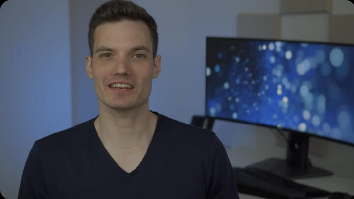
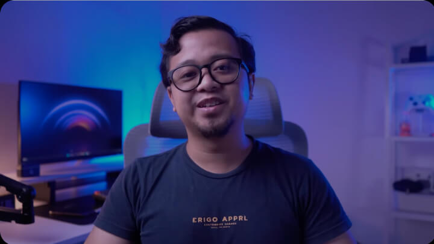
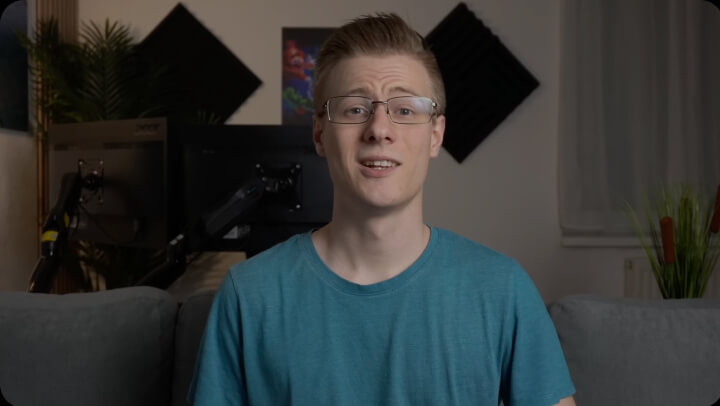
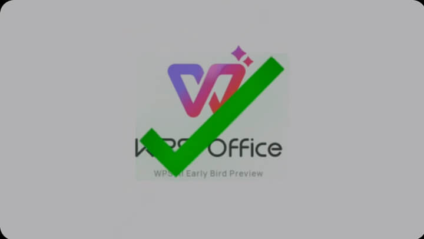
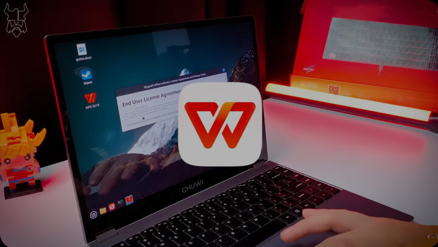
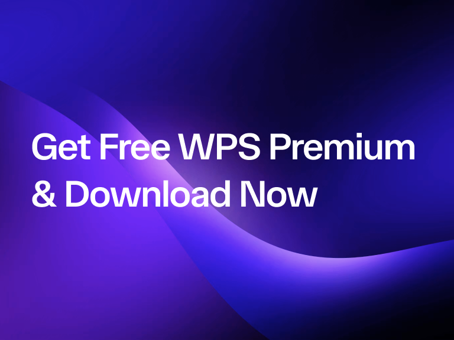
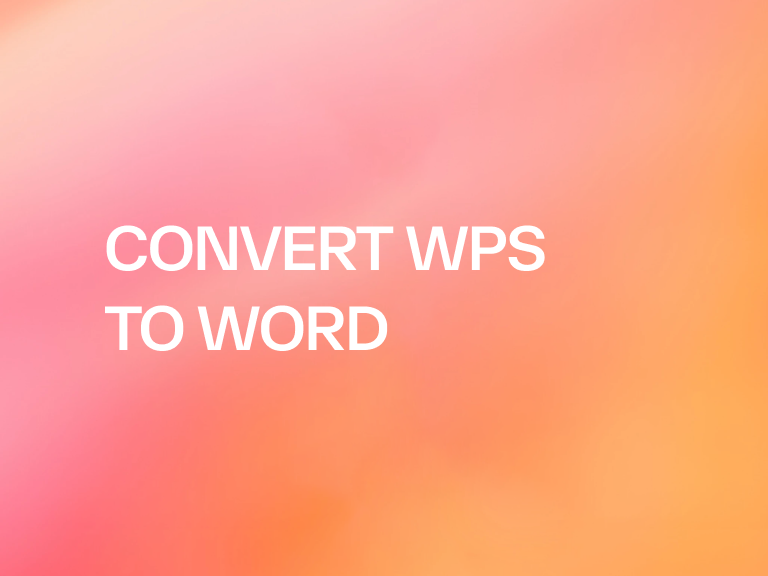
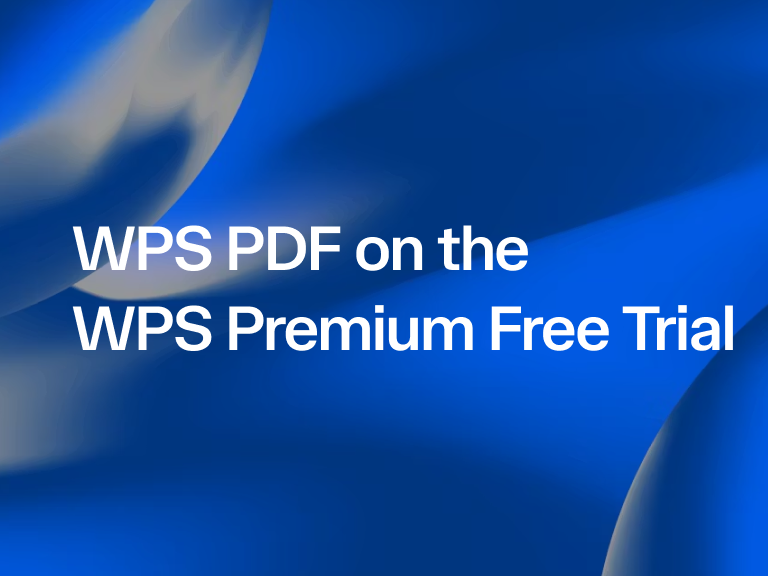

14:14A powerful Microsoft Office alternative with familiar design, full compatibility, and built-in PDF tools — trusted by millions worldwide.
Edit, convert, merge, compress, sign, fill, and organize PDFs with ease. Work seamlessly with PDF, Word, Excel, PPT, and image files--fast, simple, and free.
Online PDF toolkit
Best online PDF editor, converter, merger, form filler and organizer for easy editing page, text or layout on PDF documents like Word for FREE in seconds.
Experience the shift from manual labor to intelligent creation. WPS software is your co-pilot for every task.

14:14A powerful Microsoft Office alternative with familiar design, full compatibility, and built-in PDF tools — trusted by millions worldwide.
Excellent compatibility with Office formats, plus 100,000+ templates and a full suite of tools — all available across desktop and mobile.

08:53Create, edit, and manage all your documents in one place — with templates, PDF tools, and full cross-platform support.
With a familiar interface, powerful AI features for writing and translation, and smooth performance across devices, WPS is a smart and efficient way to get your work done.

08:28Designed to feel instantly familiar, with a clean interface and a smooth, easy-to-use experience.
 14:06
14:06
Brings a desktop-like Office experience to mobile — familiar, easy to use, and powerful in one all-in-one app.

04:05With powerful AI tools, you can generate content, translate full documents instantly, summarize long files, and even chat with your PDFs for quick insights.

08:02Fast, lightweight, and easy to use, it's one of the best choices for creating and editing documents, spreadsheets, and presentations without hassle.
Complete PDF toolkit for desktop editing and conversion.
Free DownloadCompatible with Intel and Apple chips for seamless PDF work.
Free DownloadFree office suite with full PDF tools for Linux users.
Edit, convert, and share documents on the go.
Free Download
Work with PDFs, Word, Excel, and PPT on iPhone and iPad.
Free DownloadYou can use PDF Converter to convert PDF files to/from Word, Excel, PowerPoint, and image files online. Take PDF to Word conversion as an example. Open PDF to Word Converter, click Select File to upload your file, then download the Word document.
1. Open the WPS PDF editor or download WPS Office to open a PDF file.
2. Click Text Tools on the top navigation bar.
3. Add text to the PDF page. Click the existing text to start editing.
4. Add images to the PDF page. Drag and move, resize, or rotate the images.
5. Fill PDFs and add an e-signature by drawing, typing, or uploading your signature image.
6. Annotate PDF pages with highlighted text, and mark changes. Try the Sign PDF tool online for free.
1. You can open the PDF Organizer online tool and click Select File to upload your file.
2. You can arrange the pages in this PDF file by adding new pages, deleting old pages, or adjusting the order of the pages.
3. Click Continue to download the file.
4. Try the Manage PDF tool online for free now.
PDF Blog helps you fully understand how to use PDF tools, provides you quick access to software news, recommends different types of office software worth downloading, and offers you information about PDF version update.

As a both lightweight and powerful office suite, WPS Office has become more and more popular and competitive among its competitors. WPS Office has provided free access to its four programs.

WPS is a file format, similar to text documents, created by Microsoft Works Word Processor. This file is homogeneous to the Doc files created by Microsoft Word.

WPS Office is a powerful alternative to Microsoft Office for producing and editing documents. Templates for documents, presentations, and spreadsheets are provided at no cost.
WPS PDF is a useful all-in-one PDF online tool that makes it easy to edit, convert, and manage PDF files. It works as an online PDF editor, converter, merger, form filler, and organizer for editing page, text, or layout in seconds.
Learn More →PDF is now a component of WPS Office, providing collaborative viewing, annotation, and editing. Add text and images, fill forms, draw e-signatures, and annotate pages with highlights—without a steep learning curve.
Learn More →Start with free online tools, then download WPS Office to unlock OCR (image scanning and conversion), watermarks, e-signatures, PDF-to-image conversion, and faster desktop performance when you need more.
Learn More →Reduce PDF file size online with multiple compression ratios (HD, Recommended, Smallest). The compression process preserves your information without damaging files, so you can share documents faster.
Learn More →WPS Office is available for Windows, Mac, Linux, Android, and iOS. Mac builds support Intel and Apple chips, and the Android app was named Google Play Best of 2015—so you can work wherever you are.
Learn More →Convert mesh, CAD, and BIM formats—including OBJ, STEP, IFC, and Revit—into STL, FBX, GLB/GLTF, and more for design, engineering, and visualization workflows.
Learn More →